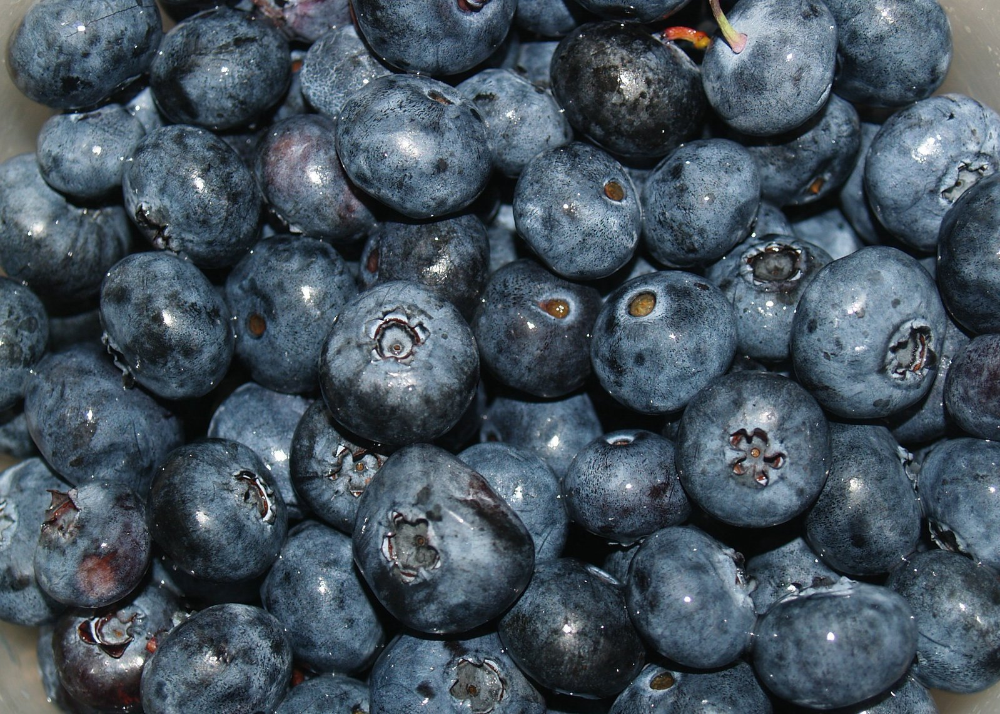
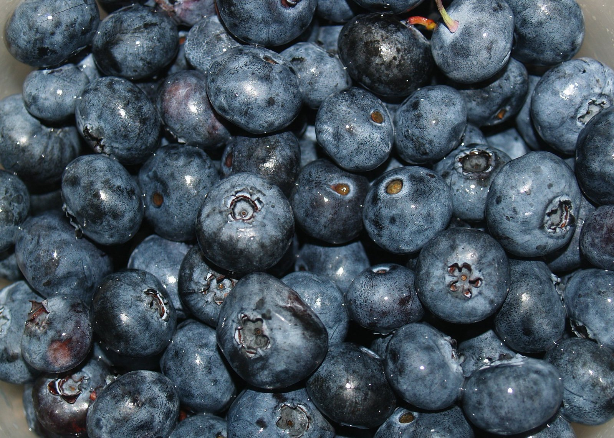

Blue & Beautiful
Blueberries are small but mighty, known for their sweet-tart flavor and rich antioxidant content. They’re often called a “superfood” for their many health benefits.
- Blueberries can help improve memory.
- They’re one of the only naturally blue foods.
- Native to North America!